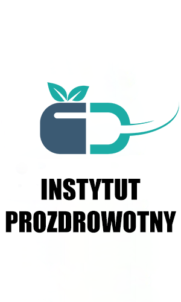
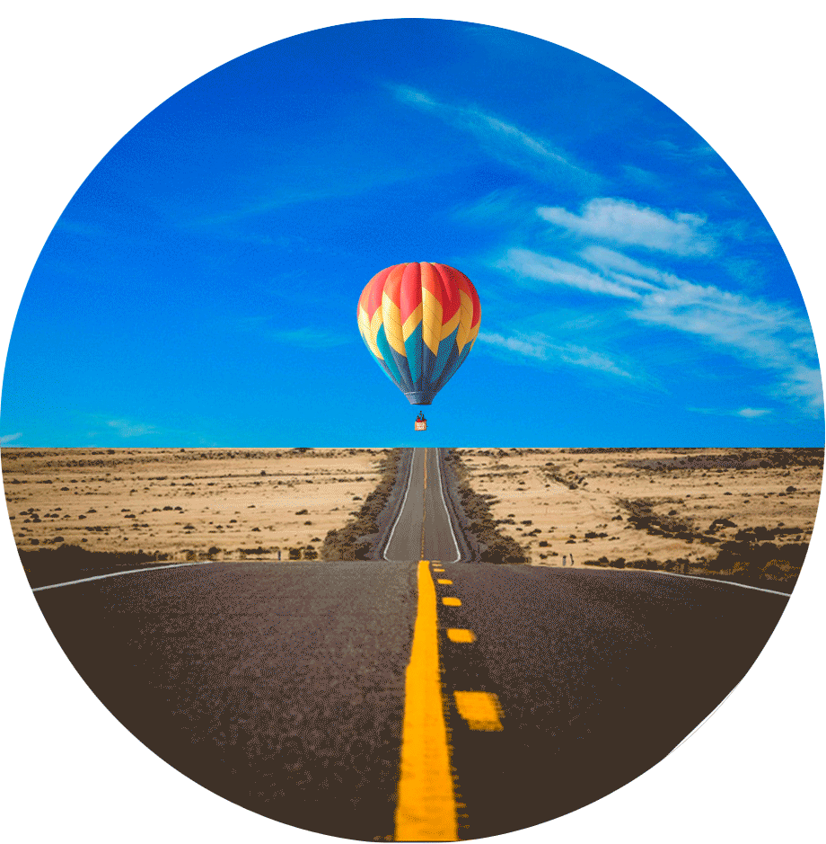

DARMOWE BADANIE WZROKU ONLINE
Uwaga!
Możesz otrzymać refundację na produkt w ramach programu wsparcia wzroku!
Aby to zrobić, musisz odpowiedzieć na dziewięć pytań:
Badanie wzroku online
Proszę podać swój wiek
Zmiany w widzeniu związane z wiekiem są nieuniknione, elastyczność soczewki i mięśnie oka ulegają osłabieniu, a każda osoba powyżej 40 roku życia jest szczególnie narażona na rozwój tej dolegliwości.
Mniej niż 50 lat
Powyżej 50 lat
Jakie są Twoje dolegliwości związane ze wzrokiem?
Można wybrać kilka opcji
Wybierz
Ustaw ekran w odległości 30 cm od oczu.
Kiedy będziesz gotowy, naciśnij przycisk "Start". Na ekranie zobaczysz obraz balonu, obserwuj go w bezruchu, tylko za pomocą swoich źrenic
Start
Trwa sprawdzanie
Przetwarzanie uzyskanych danych...
Wyniki badań
30
/
100